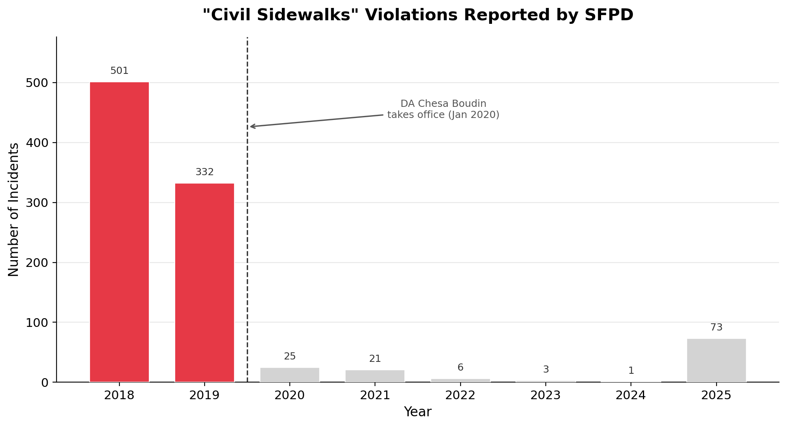

A data story about San Francisco, homelessness, and the gap between reporting and reality
In 2019, San Francisco police filed thousands of reports for "Civil Sidewalks" violations — a catch-all category covering offenses like camping on sidewalks, aggressive panhandling, and blocking public rights-of-way. These reports were concentrated in the Tenderloin, SoMa, and Mission — neighborhoods long associated with visible homelessness.
By 2021, the number was close to zero. And it stayed there.
If you stopped reading here, you might conclude that San Francisco had solved one of its most visible urban problems. That is the story the raw numbers appear to tell. But it is not the whole story.

"Civil Sidewalks" violations — covering offenses like sitting or lying on sidewalks, aggressive panhandling, and encampments — dropped from thousands of incidents per year to near-zero after 2020. The dashed line marks when DA Chesa Boudin took office in January 2020, bringing a policy shift away from prosecuting quality-of-life offenses. A reader might attribute the drop to COVID-19 lockdowns, but the numbers remain near zero through 2024 and 2025, years when the city was fully reopened. This is not a pandemic artifact — it is a change in enforcement and reporting.
The dataset we work with is the San Francisco Police Department's Incident Reports, publicly available through SF OpenData. It covers every police-reported incident in the city from 2018 to early 2026 — hundreds of thousands of records, each tagged with a crime category, date, time, GPS coordinates, and police district.
To test whether the decline in Civil Sidewalks reflects reality on the ground, we identified which other crime categories share the most similar temporal pattern. Using Pearson correlation across yearly counts, we found the crimes whose trends most closely tracked Civil Sidewalks before 2020. If homelessness-related activity had genuinely declined, we would expect those correlated crimes to follow the same downward path.
They did not. The maps below show the geographic hotspots of these crimes before and after 2020. The Tenderloin and SoMa remain dominant in both periods.
"The hotspots didn't move. The underlying activity persists in the same neighborhoods. Only the 'Civil Sidewalks' label vanished from the reports."
Heatmaps of homelessness-related crime in San Francisco.
Left: Civil Sidewalks violations before 2020, concentrated in the Tenderloin and SoMa.
Right: the most correlated crime categories (Drug Offense, Disorderly Conduct) after 2020,
in the sameneighbourhoods. The hotspots haven't moved — only the "Civil Sidewalks" label vanished from the data. Zoom and pan
each map to explore the full city.
In January 2020, District Attorney Chesa Boudin took office on a platform of criminal justice reform. His office deprioritized prosecution of quality-of-life offenses, including the sit/lie ordinances that generated most Civil Sidewalks reports. When prosecutors stop pursuing charges, police have less incentive to file reports. The data reflects not a change in behavior on the streets, but a change in what gets written down.
Some readers might wonder about COVID-19. The timing overlaps — pandemic restrictions began in March
2020. But the pandemic ended. San Francisco reopened. By 2024 and 2025 the city was operating
normally, yet Civil Sidewalks reports had not returned. A temporary disruption does not produce a
permanent change. A policy shift does.
The clearest evidence comes from outside the SFPD dataset. San Francisco conducts a biennial Point-in-Time (PIT)
count of every person experiencing homelessness on a given night. In 2019, the total was 8,035 — including 5,180 unsheltered
individuals. In 2024, it was 8,323. The unsheltered count has fluctuated, but the overall homeless population only grew.
Homelessness did not decrease in San Francisco. The reports stopped. The problem did not.
The below figure combines the normalized crime trends with the PIT homeless population count. Toggle the crime types in the legend to compare trajectories. Civil Sidewalks (shown in red) collapses to zero; the homeless population it was documenting does not.
An interactive comparison of crime reporting trends and actual homelessness in San Francisco.
Top panel: incident counts for Civil Sidewalks and its most correlated
crime categories, each normalized to their 2018 level (1.0 = same as 2018). Click legend items
to toggle crime types on and off. Civil Sidewalks (red) collapses to near-zero after 2020, while
correlated crimes show more moderate changes.
Bottom panel: San Francisco's
biennial Point-in-Time homeless count. The total was 8,035 in 2019 and 8,323 in 2024.
The population those reports were meant to address did not shrink — the reporting did.
This is a concrete example of what Richardson, Schultz, and Crawford (2019) call "dirty data" — the insight that police datasets are not neutral measurements of crime, but reflections of enforcement priorities, political incentives, and institutional decisions. A naive analysis of SFPD data would conclude that sidewalk-related offenses were eliminated. A careful one recognizes that only the reporting was eliminated.
More broadly, crime statistics do not measure crime itself, but policing decisions. When enforcement priorities change, the numbers change, regardless of what is happening on the street. For anyone using crime data to draw conclusions — whether evaluating policy, allocating resources, or training a predictive model — this distinction matters.
"A dramatic trend in administrative data may reflect a bureaucratic shift — not a change in the world it purports to describe."
For anyone using crime data to draw conclusions — whether evaluating policy, allocating resources, or training a predictive model — this distinction matters. The data does not lie. But it does not tell the whole truth either.